CODING AGENTS AS PIXEL WORLD MODELS
traex/DeepSeek-V4.1-Flash · phygen_096
点击播放 · 原生 RGB 像素
逐轮保存的候选
回放视频、检查图与代码变化。
每份候选均可单独播放。实际图片检查记录在下方工具轨迹中。
候选 01播放与检查图
点击播放 · 原生 RGB 像素

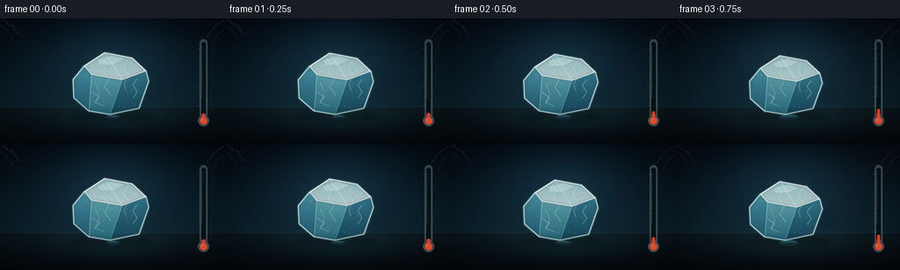
展开代码变化
--- 上一保存版本
+++ 本次保存版本
@@ -0,0 +1,541 @@
+from pathlib import Path
+import math
+
+import numpy as np
+from PIL import Image, ImageDraw, ImageFilter
+
+import artifact_io
+
+
+W, H = 256, 144
+N, FPS = 20, 4
+SS = 4
+IW, IH = W * SS, H * SS
+CASE_DIR = Path(__file__).resolve().parent
+
+
+def clamp(value, low=0.0, high=1.0):
+ return max(low, min(high, value))
+
+
+def smoothstep(value):
+ value = clamp(value)
+ return value * value * (3.0 - 2.0 * value)
+
+
+def mix(a, b, amount):
+ return tuple(a[i] + (b[i] - a[i]) * amount for i in range(len(a)))
+
+
+def scaled_point(point):
+ return (round(point[0] * SS), round(point[1] * SS))
+
+
+def scaled_points(points):
+ return [scaled_point(point) for point in points]
+
+
+def draw_line(draw, points, fill, width=1, joint="curve"):
+ draw.line(scaled_points(points), fill=fill, width=max(1, round(width * SS)), joint=joint)
+
+
+def draw_polygon(draw, points, fill, outline=None, width=1):
+ draw.polygon(scaled_points(points), fill=fill)
+ if outline is not None:
+ draw.line(
+ scaled_points(points + [points[0]]),
+ fill=outline,
+ width=max(1, round(width * SS)),
+ joint="curve",
+ )
+
+
+def ellipse_box(cx, cy, rx, ry):
+ return [
+ (round((cx - rx) * SS), round((cy - ry) * SS)),
+ (round((cx + rx) * SS), round((cy + ry) * SS)),
+ ]
+
+
+def gradient_polygon(base, points, top_color, bottom_color, alpha):
+ mask = Image.new("L", (IW, IH), 0)
+ mask_draw = ImageDraw.Draw(mask)
+ mask_draw.polygon(scaled_points(points), fill=255)
+
+ min_y = max(0, int(min(point[1] for point in points) * SS))
+ max_y = min(IH, int(max(point[1] for point in points) * SS) + 1)
+ ys = np.arange(min_y, max_y, dtype=np.float32)
+ if len(ys) == 0:
+ return
+ amount = np.clip((ys - min_y) / max(1, max_y - min_y - 1), 0.0, 1.0)[:, None]
+ top = np.asarray(top_color, dtype=np.float32)
+ bottom = np.asarray(bottom_color, dtype=np.float32)
+ colors = top * (1.0 - amount) + bottom * amount
+
+ patch = np.zeros((max_y - min_y, IW, 4), dtype=np.uint8)
+ patch[:, :, :3] = np.clip(colors[:, None, :], 0, 255).astype(np.uint8)
+ patch[:, :, 3] = round(alpha if alpha > 1.0 else alpha * 255)
+ layer = Image.new("RGBA", (IW, IH), (0, 0, 0, 0))
+ layer.paste(Image.fromarray(patch, "RGBA"), (0, min_y))
+ layer.putalpha(Image.fromarray(np.minimum(np.asarray(layer.getchannel("A")), np.asarray(mask))))
+ base.alpha_composite(layer)
+
+
+def add_soft_glow(base, points, color, alpha, blur):
+ layer = Image.new("RGBA", (IW, IH), (0, 0, 0, 0))
+ draw = ImageDraw.Draw(layer)
+ rgb = tuple(round(channel) for channel in color)
+ draw.polygon(scaled_points(points), fill=(*rgb, round(alpha)))
+ layer = layer.filter(ImageFilter.GaussianBlur(blur * SS))
+ base.alpha_composite(layer)
+
+
+def make_background(t, rng):
+ melt = smoothstep(t)
+ warmth = smoothstep(clamp((t - 0.08) / 0.92))
+ yy, xx = np.mgrid[0:IH, 0:IW]
+ nx = xx / (IW - 1)
+ ny = yy / (IH - 1)
+
+ top_cold = np.array((4, 12, 21), dtype=np.float32)
+ top_warm = np.array((20, 15, 18), dtype=np.float32)
+ middle_cold = np.array((13, 34, 45), dtype=np.float32)
+ middle_warm = np.array((40, 27, 23), dtype=np.float32)
+ floor_top_cold = np.array((12, 25, 31), dtype=np.float32)
+ floor_top_warm = np.array((40, 27, 23), dtype=np.float32)
+ floor_bottom_cold = np.array((4, 10, 14), dtype=np.float32)
+ floor_bottom_warm = np.array((14, 9, 9), dtype=np.float32)
+
+ top_color = top_cold * (1 - warmth * 0.55) + top_warm * (warmth * 0.55)
+ middle_color = middle_cold * (1 - warmth * 0.62) + middle_warm * (warmth * 0.62)
+ floor_top = floor_top_cold * (1 - warmth * 0.70) + floor_top_warm * (warmth * 0.70)
+ floor_bottom = floor_bottom_cold * (1 - warmth * 0.70) + floor_bottom_warm * (warmth * 0.70)
+
+ wall_end = 0.704
+ wall_ratio = np.clip(ny / wall_end, 0.0, 1.0)[..., None]
+ wall = top_color * (1 - wall_ratio) + middle_color * wall_ratio
+ floor_ratio = np.clip((ny - wall_end) / (1.0 - wall_end), 0.0, 1.0)[..., None]
+ floor = floor_top * (1 - floor_ratio) + floor_bottom * floor_ratio
+ image = np.where((ny < wall_end)[..., None], wall, floor)
+
+ cool_glow = np.exp(-(((nx - 0.50) / 0.28) ** 2 + ((ny - 0.33) / 0.34) ** 2))
+ cool_strength = 34.0 * (1.0 - warmth * 0.46)
+ image += cool_glow[..., None] * np.array((0.28, 0.75, 0.90), dtype=np.float32) * cool_strength
+
+ warm_glow = np.exp(-(((nx - 0.83) / 0.34) ** 2 + ((ny - 0.20) / 0.42) ** 2))
+ warm_strength = 82.0 * warmth ** 1.15
+ image += warm_glow[..., None] * np.array((1.00, 0.43, 0.15), dtype=np.float32) * warm_strength
+
+ table_glow = np.exp(-(((nx - 0.51) / 0.23) ** 2 + ((ny - 0.79) / 0.095) ** 2))
+ image += table_glow[..., None] * (
+ np.array((0.26, 0.72, 0.80), dtype=np.float32) * (1 - warmth) * 23.0
+ + np.array((1.0, 0.47, 0.20), dtype=np.float32) * warmth * 30.0
+ )
+
+ horizon = np.exp(-((ny - wall_end) / 0.005) ** 2)
+ image += horizon[..., None] * np.array((0.45, 0.74, 0.79), dtype=np.float32) * 10.0
+
+ vignette = np.clip(((nx - 0.5) / 0.62) ** 2 + ((ny - 0.49) / 0.72) ** 2, 0, 1)
+ image *= (1.0 - 0.40 * vignette[..., None] ** 1.35)
+ image += rng.normal(0.0, 1.25, (IH, IW, 1)).astype(np.float32)
+ image = np.clip(image, 0, 255).astype(np.uint8)
+ return Image.fromarray(image, "RGB").convert("RGBA")
+
+
+def draw_frost_corners(base, t, rng):
+ strength = (1.0 - smoothstep(t / 0.56)) ** 1.4
+ if strength <= 0.01:
+ return
+ layer = Image.new("RGBA", (IW, IH), (0, 0, 0, 0))
+ draw = ImageDraw.Draw(layer)
+ alpha = round(44 * strength)
+ branches = [
+ [(0, 1), (13, 7), (21, 18), (30, 21)],
+ [(0, 8), (8, 13), (14, 24)],
+ [(3, 0), (10, 8), (17, 9)],
+ [(255, 2), (244, 9), (235, 21), (226, 25)],
+ [(255, 13), (247, 18), (242, 30)],
+ ]
+ for branch in branches:
+ draw_line(draw, branch, (205, 241, 242, alpha), 0.65)
+ for point in branch[1:-1]:
+ draw_line(
+ draw,
+ [point, (point[0] + rng.uniform(-5, 5), point[1] + rng.uniform(2, 6))],
+ (205, 241, 242, round(alpha * 0.65)),
+ 0.45,
+ )
+ for _ in range(18):
+ x = rng.uniform(2, 34) if rng.random() < 0.5 else rng.uniform(220, 253)
+ y = rng.uniform(3, 35)
+ radius = rng.uniform(0.25, 0.75)
+ draw.ellipse(ellipse_box(x, y, radius, radius), fill=(220, 248, 248, round(alpha * 0.55)))
+ base.alpha_composite(layer.filter(ImageFilter.GaussianBlur(0.35 * SS)))
+
+
+def draw_shadows(base, melt):
+ shadow = Image.new("RGBA", (IW, IH), (0, 0, 0, 0))
+ draw = ImageDraw.Draw(shadow)
+ cx = 128.0
+ rx = 48.0 - 8.0 * melt
+ ry = 7.0 - 1.5 * melt
+ draw.ellipse(ellipse_box(cx, 112.2, rx, ry), fill=(0, 6, 8, 105))
+ draw.ellipse(ellipse_box(cx - 5, 112.6, rx * 0.72, ry * 0.66), fill=(0, 0, 0, 60))
+ base.alpha_composite(shadow.filter(ImageFilter.GaussianBlur(3.2 * SS)))
+
+
+def draw_puddle(base, t, melt):
+ pool = smoothstep(clamp((t - 0.025) / 0.975))
+ cx = 128.5 + 1.8 * math.sin(t * math.pi)
+ cy = 112.2
+ rx = 6.5 + 59.0 * pool
+ ry = 1.5 + 11.5 * pool
+ warmth = smoothstep(clamp((t - 0.16) / 0.84))
+
+ layer = Image.new("RGBA", (IW, IH), (0, 0, 0, 0))
+ draw = ImageDraw.Draw(layer)
+ draw.ellipse(ellipse_box(cx, cy + 0.6, rx + 2.6, ry + 1.5), fill=(69, 126, 129, 34))
+ base.alpha_composite(layer.filter(ImageFilter.GaussianBlur(0.8 * SS)))
+
+ top_color = (
+ int(46 + 21 * warmth),
+ int(104 + 10 * warmth),
+ int(116 - 2 * warmth),
+ )
+ bottom_color = (
+ int(9 + 11 * warmth),
+ int(37 + 2 * warmth),
+ int(47 - 8 * warmth),
+ )
+ water_mask = Image.new("L", (IW, IH), 0)
+ ImageDraw.Draw(water_mask).ellipse(ellipse_box(cx, cy, rx, ry), fill=255)
+ min_y = max(0, round((cy - ry) * SS))
+ max_y = min(IH, round((cy + ry) * SS) + 1)
+ ratio = np.clip(
+ (np.arange(min_y, max_y, dtype=np.float32) - min_y) / max(1, max_y - min_y - 1),
+ 0,
+ 1,
+ )[:, None]
+ colors = np.asarray(top_color) * (1 - ratio) + np.asarray(bottom_color) * ratio
+ patch = np.zeros((max_y - min_y, IW, 4), dtype=np.uint8)
+ patch[:, :, :3] = np.clip(colors[:, None, :], 0, 255).astype(np.uint8)
+ patch[:, :, 3] = 218
+ gradient = Image.new("RGBA", (IW, IH), (0, 0, 0, 0))
+ gradient.paste(Image.fromarray(patch, "RGBA"), (0, min_y))
+ gradient.putalpha(Image.fromarray(np.minimum(np.asarray(gradient.getchannel("A")), np.asarray(water_mask))))
+ base.alpha_composite(gradient)
+
+ sheen = Image.new("RGBA", (IW, IH), (0, 0, 0, 0))
+ draw = ImageDraw.Draw(sheen)
+ draw.ellipse(ellipse_box(cx - rx * 0.13, cy - ry * 0.38, rx * 0.58, ry * 0.38), fill=(176, 230, 226, 20))
+ draw.ellipse(ellipse_box(cx + rx * 0.32, cy - ry * 0.18, rx * 0.19, ry * 0.17), fill=(255, 238, 207, round(18 + 20 * warmth)))
+ base.alpha_composite(sheen.filter(ImageFilter.GaussianBlur(1.0 * SS)))
+
+ ripple = Image.new("RGBA", (IW, IH), (0, 0, 0, 0))
+ draw = ImageDraw.Draw(ripple)
+ for index in range(2):
+ amount = (t * 1.4 + index * 0.46) % 1.0
+ radius = rx * (0.26 + 0.38 * amount)
+ height = ry * (0.32 + 0.35 * amount)
+ alpha = round(30 * (1 - amount) * clamp(pool * 1.8))
+ draw.arc(
+ ellipse_box(cx, cy, radius, height),
+ 194,
+ 348,
+ fill=(194, 238, 235, alpha),
+ width=max(1, round(0.55 * SS)),
+ )
+ base.alpha_composite(ripple.filter(ImageFilter.GaussianBlur(0.32 * SS)))
+
+
+ICE_TOP = [(96, 54), (119, 39), (150, 45), (166, 60), (139, 70), (104, 64)]
+ICE_LEFT = [(96, 54), (104, 64), (101, 106), (84, 91), (83, 70)]
+ICE_FRONT = [(104, 64), (139, 70), (125, 110), (101, 106)]
+ICE_RIGHT = [(139, 70), (166, 60), (169, 72), (158, 103), (125, 110)]
+ICE_SILHOUETTE = [
+ (83, 70),
+ (96, 54),
+ (119, 39),
+ (150, 45),
+ (166, 60),
+ (169, 72),
+ (158, 103),
+ (125, 110),
+ (101, 106),
+ (84, 91),
+]
+
+
+def transform_ice(points, melt):
+ sx = 1.0 - 0.47 * melt
+ sy = 1.0 - 0.60 * melt
+ cx = 126.0
+ base_y = 110.0
+ result = []
+ for index, (x, y) in enumerate(points):
+ x2 = cx + (x - cx) * sx + 1.2 * melt
+ y2 = base_y - (base_y - y) * sy
+ y2 += math.sin(index * 1.7 + melt * 2.4) * 0.55 * melt
+ result.append((x2, y2))
+ return result
+
+
+def draw_ice(base, t, melt, rng):
+ warmth = smoothstep(clamp((t - 0.10) / 0.90))
+ top = transform_ice(ICE_TOP, melt)
+ left = transform_ice(ICE_LEFT, melt)
+ front = transform_ice(ICE_FRONT, melt)
+ right = transform_ice(ICE_RIGHT, melt)
+ silhouette = transform_ice(ICE_SILHOUETTE, melt)
+
+ add_soft_glow(
+ base,
+ silhouette,
+ mix((90, 210, 222), (255, 177, 111), warmth * 0.45),
+ round(28 + 22 * warmth),
+ 3.8,
+ )
+
+ top_c0 = mix((181, 228, 230), (236, 205, 174), warmth * 0.16)
+ top_c1 = mix((235, 250, 247), (255, 232, 203), warmth * 0.20)
+ left_c0 = mix((91, 177, 195), (171, 155, 139), warmth * 0.14)
+ left_c1 = mix((35, 103, 129), (98, 74, 68), warmth * 0.20)
+ front_c0 = mix((129, 213, 221), (215, 183, 154), warmth * 0.13)
+ front_c1 = mix((45, 129, 151), (105, 82, 72), warmth * 0.19)
+ right_c0 = mix((58, 137, 160), (137, 105, 87), warmth * 0.18)
+ right_c1 = mix((19, 68, 92), (55, 39, 37), warmth * 0.22)
+
+ gradient_polygon(base, right, right_c0, right_c1, 177)
+ gradient_polygon(base, left, left_c0, left_c1, 169)
+ gradient_polygon(base, front, front_c0, front_c1, 151)
+ gradient_polygon(base, top, top_c0, top_c1, 184)
+
+ texture_mask = Image.new("L", (IW, IH), 0)
+ ImageDraw.Draw(texture_mask).polygon(scaled_points(silhouette), fill=255)
+ texture = Image.new("RGBA", (IW, IH), (0, 0, 0, 0))
+ draw = ImageDraw.Draw(texture)
+ frost_alpha = round(62 * (1.0 - melt) + 10)
+ for _ in range(45):
+ x = rng.uniform(87, 164)
+ y = rng.uniform(43, 105)
+ radius = rng.uniform(0.20, 0.65)
+ draw.ellipse(ellipse_box(x, y, radius, radius), fill=(236, 252, 250, round(frost_alpha * rng.uniform(0.35, 1.0))))
+ for _ in range(12):
+ x = rng.uniform(92, 158)
+ y = rng.uniform(54, 96)
+ length = rng.uniform(1.5, 4.0)
+ draw_line(draw, [(x, y), (x + length, y - rng.uniform(0, 1.5))], (223, 249, 249, round(frost_alpha * 0.55)), 0.36)
+ texture.putalpha(Image.fromarray(np.minimum(np.asarray(texture.getchannel("A")), np.asarray(texture_mask))))
+ base.alpha_composite(texture)
+
+ bubbles = Image.new("RGBA", (IW, IH), (0, 0, 0, 0))
+ draw = ImageDraw.Draw(bubbles)
+ bubble_points = [
+ (109, 72, 1.5),
+ (122, 55, 0.9),
+ (145, 59, 1.1),
+ (134, 82, 1.7),
+ (116, 91, 1.1),
+ (151, 82, 1.3),
+ (100, 82, 0.8),
+ (143, 94, 0.8),
+ ]
+ for bx, by, radius in bubble_points:
+ points = transform_ice([(bx, by)], melt)
+ x, y = points[0]
+ r = radius * (1.0 - 0.28 * melt)
+ draw.ellipse(ellipse_box(x, y, r, r), outline=(225, 249, 249, 92), width=max(1, round(0.32 * SS)))
+ draw.ellipse(ellipse_box(x - r * 0.25, y - r * 0.28, r * 0.22, r * 0.22), fill=(255, 255, 255, 105))
+ base.alpha_composite(bubbles.filter(ImageFilter.GaussianBlur(0.18 * SS)))
+
+ crack_alpha = round(62 + 88 * melt)
+ cracks = [
+ [(116, 45), (121, 53), (117, 61), (124, 69), (119, 78), (126, 88)],
+ [(145, 48), (140, 56), (146, 64), (141, 75), (143, 82)],
+ [(104, 84), (113, 90), (108, 96), (119, 100)],
+ [(156, 69), (151, 76), (156, 84), (151, 91)],
+ ]
+ crack_glow = Image.new("RGBA", (IW, IH), (0, 0, 0, 0))
+ glow_draw = ImageDraw.Draw(crack_glow)
+ for crack in cracks:
+ draw_line(glow_draw, transform_ice(crack, melt), (216, 249, 250, round(crack_alpha * 0.32)), 2.0)
+ base.alpha_composite(crack_glow.filter(ImageFilter.GaussianBlur(0.65 * SS)))
+
+ crack_layer = Image.new("RGBA", (IW, IH), (0, 0, 0, 0))
+ crack_draw = ImageDraw.Draw(crack_layer)
+ for crack in cracks:
+ draw_line(crack_draw, transform_ice(crack, melt), (228, 252, 251, crack_alpha), 0.72)
+ base.alpha_composite(crack_layer)
+
+ edge_glow = Image.new("RGBA", (IW, IH), (0, 0, 0, 0))
+ glow_draw = ImageDraw.Draw(edge_glow)
+ outline = silhouette + [silhouette[0]]
+ draw_line(glow_draw, outline, (206, 248, 249, 78), 3.0)
+ draw_line(glow_draw, top + [top[0]], (255, 255, 250, 86), 2.2)
+ base.alpha_composite(edge_glow.filter(ImageFilter.GaussianBlur(0.9 * SS)))
+
+ edges = Image.new("RGBA", (IW, IH), (0, 0, 0, 0))
+ edge_draw = ImageDraw.Draw(edges)
+ draw_line(edge_draw, outline, (220, 251, 249, 194), 0.95)
+ draw_line(edge_draw, top + [top[0]], (250, 255, 250, 224), 0.82)
+ draw_line(edge_draw, [top[1], top[4], front[1]], (221, 251, 251, 135), 0.56)
+ draw_line(edge_draw, [top[4], right[0], right[-1]], (205, 244, 246, 112), 0.50)
+ draw_line(edge_draw, [left[0], left[1], left[2]], (242, 255, 252, 126), 0.48)
+ base.alpha_composite(edges)
+
+ specular = Image.new("RGBA", (IW, IH), (0, 0, 0, 0))
+ draw = ImageDraw.Draw(specular)
+ draw.polygon(
+ scaled_points(transform_ice([(111, 47), (128, 42), (142, 46), (129, 53), (113, 53)], melt)),
+ fill=(255, 255, 247, 54),
+ )
+ draw_line(
+ draw,
+ transform_ice([(108, 72), (113, 85), (108, 97)], melt),
+ (255, 255, 251, 58),
+ 1.2,
+ )
+ draw_line(
+ draw,
+ transform_ice([(148, 65), (143, 78), (146, 91)], melt),
+ (235, 253, 249, 45),
+ 0.72,
+ )
+ base.alpha_composite(specular.filter(ImageFilter.GaussianBlur(0.35 * SS)))
+
+ return silhouette
+
+
+def draw_drips(base, t, melt):
+ if t < 0.16:
+ return
+ layer = Image.new("RGBA", (IW, IH), (0, 0, 0, 0))
+ draw = ImageDraw.Draw(layer)
+ strength = smoothstep(clamp((t - 0.16) / 0.32)) * (1.0 - 0.22 * melt)
+ for index, (x0, offset) in enumerate([(121.0, 0.05), (137.5, 0.43), (149.0, 0.72)]):
+ points = transform_ice([(x0, 104)], melt)
+ x = points[0][0] + math.sin(index * 2.1 + t * 8.0) * 0.8
+ y0 = points[0][1]
+ phase = (t * 1.72 + offset) % 1.0
+ y = y0 + 3.0 + phase * 8.0
+ radius = 0.78 + 0.32 * (1.0 - phase)
+ alpha = round((120 + 70 * (1.0 - phase)) * strength)
+ draw.ellipse(ellipse_box(x, y, radius * 0.78, radius * 1.35), fill=(164, 229, 230, alpha))
+ draw.ellipse(ellipse_box(x - radius * 0.24, y - radius * 0.52, radius * 0.22, radius * 0.28), fill=(255, 255, 250, round(alpha * 0.75)))
+ base.alpha_composite(layer)
+
+
+def draw_steam(base, t, melt):
+ amount = smoothstep(clamp((t - 0.30) / 0.52))
+ if amount <= 0.01:
+ return
+ layer = Image.new("RGBA", (IW, IH), (0, 0, 0, 0))
+ draw = ImageDraw.Draw(layer)
+ streams = [(112.0, 91.0, 40.0), (126.0, 96.0, 54.0), (143.0, 88.0, 45.0)]
+ for index, (base_x, base_y, height) in enumerate(streams):
+ phase = t * 4.3 + index * 1.9
+ points = []
+ for step in range(17):
+ ratio = step / 16
+ y = base_y - height * ratio
+ x = base_x + math.sin(ratio * 8.0 + phase) * (1.2 + 3.0 * ratio)
+ points.append((x, y))
+ alpha = round((19 + 26 * amount) * (0.72 + 0.28 * math.sin(index + t * 5.0)))
+ draw_line(draw, points, (224, 242, 239, alpha), 0.65)
+ base.alpha_composite(layer.filter(ImageFilter.GaussianBlur(1.2 * SS)))
+
+
+def draw_thermometer(base, t):
+ warmth = smoothstep(clamp((t - 0.08) / 0.92))
+ temp = 12.0 + 64.0 * smoothstep(t)
+ temp_norm = clamp((temp - 10.0) / 66.0)
+ x = 231.5
+ top = 24.0
+ bottom = 111.0
+ level = bottom - temp_norm * (bottom - 33.0)
+
+ glow = Image.new("RGBA", (IW, IH), (0, 0, 0, 0))
+ draw = ImageDraw.Draw(glow)
+ draw.rounded_rectangle(
+ [round((x - 7) * SS), round((level - 4) * SS), round((x + 7) * SS), round(120 * SS)],
+ radius=round(7 * SS),
+ fill=(242, 79, 46, round(8 + 23 * warmth)),
+ )
+ base.alpha_composite(glow.filter(ImageFilter.GaussianBlur(3.2 * SS)))
+
+ glass = Image.new("RGBA", (IW, IH), (0, 0, 0, 0))
+ draw = ImageDraw.Draw(glass)
+ draw.rounded_rectangle(
+ [round((x - 4.2) * SS), round(top * SS), round((x + 4.2) * SS), round(114 * SS)],
+ radius=round(4.2 * SS),
+ fill=(198, 229, 232, 56),
+ outline=(225, 247, 247, 88),
+ width=max(1, round(0.55 * SS)),
+ )
+ draw.rounded_rectangle(
+ [round((x - 2.4) * SS), round((top + 3) * SS), round((x + 2.4) * SS), round(110 * SS)],
+ radius=round(2.4 * SS),
+ fill=(5, 15, 20, 195),
+ )
+ for tick_index in range(13):
+ tick_y = 100.0 - tick_index * 5.45
+ long_tick = tick_index % 2 == 0
+ draw_line(
+ draw,
+ [(x - (7.0 if long_tick else 5.5), tick_y), (x - 3.0, tick_y)],
+ (221, 242, 240, 85 if long_tick else 48),
+ 0.36,
+ )
+ draw.ellipse(ellipse_box(x, 117.0, 6.2, 6.2), fill=(195, 225, 228, 63), outline=(226, 246, 245, 94), width=max(1, round(0.55 * SS)))
+ draw.ellipse(ellipse_box(x, 117.0, 4.2, 4.2), fill=(211, 55, 42, 225))
+ draw.rounded_rectangle(
+ [round((x - 1.55) * SS), round(level * SS), round((x + 1.55) * SS), round(117 * SS)],
+ radius=round(1.55 * SS),
+ fill=(232, 65, 43, 238),
+ )
+ draw.ellipse(ellipse_box(x, 117.0, 4.2, 4.2), fill=(238, 75, 43, 238))
+ draw.ellipse(ellipse_box(x - 1.45, 115.8, 1.0, 1.15), fill=(255, 194, 161, 165))
+ draw_line(draw, [(x - 2.1, top + 7), (x - 2.1, 91)], (240, 253, 249, 55), 0.42)
+ base.alpha_composite(glass)
+
+
+def add_finishing_light(base, t):
+ warmth = smoothstep(clamp((t - 0.12) / 0.88))
+ yy, xx = np.mgrid[0:IH, 0:IW]
+ nx = xx / (IW - 1)
+ ny = yy / (IH - 1)
+ ray = np.exp(-(((nx - 0.83) + (ny - 0.14) * 0.34) / 0.12) ** 2)
+ ray *= np.exp(-((ny - 0.17) / 0.44) ** 2)
+ array = np.asarray(base).astype(np.float32)
+ array[:, :, :3] += ray[..., None] * np.array((58, 21, 6), dtype=np.float32) * warmth
+ array[:, :, :3] = np.clip(array[:, :, :3], 0, 255)
+ return Image.fromarray(array.astype(np.uint8), "RGBA")
+
+
+def render_frame(frame_index):
+ t = frame_index / (N - 1)
+ melt = smoothstep(t) ** 0.92
+ rng = np.random.default_rng(7300 + frame_index)
+ texture_rng = np.random.default_rng(9127)
+
+ image = make_background(t, rng)
+ draw_frost_corners(image, t, np.random.default_rng(4471))
+ draw_shadows(image, melt)
+ draw_puddle(image, t, melt)
+ draw_ice(image, t, melt, texture_rng)
+ draw_drips(image, t, melt)
+ draw_steam(image, t, melt)
+ draw_thermometer(image, t)
+ image = add_finishing_light(image, t)
+ image = image.convert("RGB").resize((W, H), Image.Resampling.LANCZOS)
+ return np.asarray(image, dtype=np.uint8)
+
+
+def main():
+ frames = np.stack([render_frame(index) for index in range(N)])
+ artifact_io.save(frames, CASE_DIR)
+ print(f"saved {len(frames)} frames to {CASE_DIR}")
+
+
+if __name__ == "__main__":
+ main()
候选 02播放与检查图
点击播放 · 原生 RGB 像素

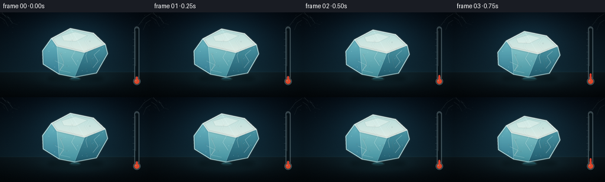
展开代码变化
--- 上一保存版本
+++ 本次保存版本
@@ -186,26 +186,26 @@
def draw_puddle(base, t, melt):
pool = smoothstep(clamp((t - 0.025) / 0.975))
- cx = 128.5 + 1.8 * math.sin(t * math.pi)
+ cx = 127.0 + 1.8 * math.sin(t * math.pi)
cy = 112.2
- rx = 6.5 + 59.0 * pool
- ry = 1.5 + 11.5 * pool
+ rx = 7.5 + 68.0 * pool
+ ry = 1.7 + 13.2 * pool
warmth = smoothstep(clamp((t - 0.16) / 0.84))
layer = Image.new("RGBA", (IW, IH), (0, 0, 0, 0))
draw = ImageDraw.Draw(layer)
- draw.ellipse(ellipse_box(cx, cy + 0.6, rx + 2.6, ry + 1.5), fill=(69, 126, 129, 34))
+ draw.ellipse(ellipse_box(cx, cy + 0.6, rx + 3.0, ry + 1.7), fill=(75, 143, 143, 42))
base.alpha_composite(layer.filter(ImageFilter.GaussianBlur(0.8 * SS)))
top_color = (
- int(46 + 21 * warmth),
- int(104 + 10 * warmth),
- int(116 - 2 * warmth),
+ int(54 + 24 * warmth),
+ int(118 + 8 * warmth),
+ int(128 - 3 * warmth),
)
bottom_color = (
- int(9 + 11 * warmth),
- int(37 + 2 * warmth),
- int(47 - 8 * warmth),
+ int(11 + 13 * warmth),
+ int(44 + 1 * warmth),
+ int(53 - 9 * warmth),
)
water_mask = Image.new("L", (IW, IH), 0)
ImageDraw.Draw(water_mask).ellipse(ellipse_box(cx, cy, rx, ry), fill=255)
@@ -219,7 +219,7 @@
colors = np.asarray(top_color) * (1 - ratio) + np.asarray(bottom_color) * ratio
patch = np.zeros((max_y - min_y, IW, 4), dtype=np.uint8)
patch[:, :, :3] = np.clip(colors[:, None, :], 0, 255).astype(np.uint8)
- patch[:, :, 3] = 218
+ patch[:, :, 3] = 230
gradient = Image.new("RGBA", (IW, IH), (0, 0, 0, 0))
gradient.paste(Image.fromarray(patch, "RGBA"), (0, min_y))
gradient.putalpha(Image.fromarray(np.minimum(np.asarray(gradient.getchannel("A")), np.asarray(water_mask))))
@@ -248,32 +248,32 @@
base.alpha_composite(ripple.filter(ImageFilter.GaussianBlur(0.32 * SS)))
-ICE_TOP = [(96, 54), (119, 39), (150, 45), (166, 60), (139, 70), (104, 64)]
-ICE_LEFT = [(96, 54), (104, 64), (101, 106), (84, 91), (83, 70)]
-ICE_FRONT = [(104, 64), (139, 70), (125, 110), (101, 106)]
-ICE_RIGHT = [(139, 70), (166, 60), (169, 72), (158, 103), (125, 110)]
+ICE_TOP = [(87, 44), (119, 27), (158, 35), (178, 54), (143, 68), (96, 57)]
+ICE_LEFT = [(87, 44), (96, 57), (100, 105), (73, 88), (72, 65)]
+ICE_FRONT = [(96, 57), (143, 68), (126, 110), (100, 105)]
+ICE_RIGHT = [(143, 68), (178, 54), (182, 70), (163, 103), (126, 110)]
ICE_SILHOUETTE = [
- (83, 70),
- (96, 54),
- (119, 39),
- (150, 45),
- (166, 60),
- (169, 72),
- (158, 103),
- (125, 110),
- (101, 106),
- (84, 91),
+ (72, 65),
+ (87, 44),
+ (119, 27),
+ (158, 35),
+ (178, 54),
+ (182, 70),
+ (163, 103),
+ (126, 110),
+ (100, 105),
+ (73, 88),
]
def transform_ice(points, melt):
- sx = 1.0 - 0.47 * melt
- sy = 1.0 - 0.60 * melt
+ sx = 1.0 - 0.54 * melt
+ sy = 1.0 - 0.72 * melt
cx = 126.0
base_y = 110.0
result = []
for index, (x, y) in enumerate(points):
- x2 = cx + (x - cx) * sx + 1.2 * melt
+ x2 = cx + (x - cx) * sx + 1.8 * melt
y2 = base_y - (base_y - y) * sy
y2 += math.sin(index * 1.7 + melt * 2.4) * 0.55 * melt
result.append((x2, y2))
@@ -292,37 +292,37 @@
base,
silhouette,
mix((90, 210, 222), (255, 177, 111), warmth * 0.45),
- round(28 + 22 * warmth),
- 3.8,
- )
-
- top_c0 = mix((181, 228, 230), (236, 205, 174), warmth * 0.16)
- top_c1 = mix((235, 250, 247), (255, 232, 203), warmth * 0.20)
- left_c0 = mix((91, 177, 195), (171, 155, 139), warmth * 0.14)
- left_c1 = mix((35, 103, 129), (98, 74, 68), warmth * 0.20)
- front_c0 = mix((129, 213, 221), (215, 183, 154), warmth * 0.13)
- front_c1 = mix((45, 129, 151), (105, 82, 72), warmth * 0.19)
- right_c0 = mix((58, 137, 160), (137, 105, 87), warmth * 0.18)
- right_c1 = mix((19, 68, 92), (55, 39, 37), warmth * 0.22)
-
- gradient_polygon(base, right, right_c0, right_c1, 177)
- gradient_polygon(base, left, left_c0, left_c1, 169)
- gradient_polygon(base, front, front_c0, front_c1, 151)
- gradient_polygon(base, top, top_c0, top_c1, 184)
+ round(42 + 30 * warmth),
+ 3.2,
+ )
+
+ top_c0 = mix((194, 235, 232), (240, 213, 184), warmth * 0.15)
+ top_c1 = mix((244, 252, 243), (255, 237, 210), warmth * 0.19)
+ left_c0 = mix((122, 205, 216), (183, 165, 145), warmth * 0.13)
+ left_c1 = mix((56, 133, 157), (112, 87, 75), warmth * 0.20)
+ front_c0 = mix((161, 232, 234), (221, 195, 166), warmth * 0.12)
+ front_c1 = mix((75, 163, 178), (122, 99, 83), warmth * 0.18)
+ right_c0 = mix((84, 167, 182), (151, 119, 96), warmth * 0.17)
+ right_c1 = mix((31, 92, 112), (68, 49, 43), warmth * 0.22)
+
+ gradient_polygon(base, right, right_c0, right_c1, 215)
+ gradient_polygon(base, left, left_c0, left_c1, 213)
+ gradient_polygon(base, front, front_c0, front_c1, 198)
+ gradient_polygon(base, top, top_c0, top_c1, 232)
texture_mask = Image.new("L", (IW, IH), 0)
ImageDraw.Draw(texture_mask).polygon(scaled_points(silhouette), fill=255)
texture = Image.new("RGBA", (IW, IH), (0, 0, 0, 0))
draw = ImageDraw.Draw(texture)
frost_alpha = round(62 * (1.0 - melt) + 10)
- for _ in range(45):
- x = rng.uniform(87, 164)
- y = rng.uniform(43, 105)
+ for _ in range(62):
+ x = rng.uniform(76, 176)
+ y = rng.uniform(31, 104)
radius = rng.uniform(0.20, 0.65)
draw.ellipse(ellipse_box(x, y, radius, radius), fill=(236, 252, 250, round(frost_alpha * rng.uniform(0.35, 1.0))))
for _ in range(12):
- x = rng.uniform(92, 158)
- y = rng.uniform(54, 96)
+ x = rng.uniform(83, 169)
+ y = rng.uniform(40, 99)
length = rng.uniform(1.5, 4.0)
draw_line(draw, [(x, y), (x + length, y - rng.uniform(0, 1.5))], (223, 249, 249, round(frost_alpha * 0.55)), 0.36)
texture.putalpha(Image.fromarray(np.minimum(np.asarray(texture.getchannel("A")), np.asarray(texture_mask))))
@@ -331,14 +331,14 @@
bubbles = Image.new("RGBA", (IW, IH), (0, 0, 0, 0))
draw = ImageDraw.Draw(bubbles)
bubble_points = [
- (109, 72, 1.5),
- (122, 55, 0.9),
- (145, 59, 1.1),
- (134, 82, 1.7),
- (116, 91, 1.1),
- (151, 82, 1.3),
- (100, 82, 0.8),
- (143, 94, 0.8),
+ (104, 70, 1.5),
+ (122, 47, 0.9),
+ (152, 49, 1.1),
+ (136, 81, 1.7),
+ (113, 91, 1.1),
+ (158, 81, 1.3),
+ (91, 79, 0.8),
+ (146, 96, 0.8),
]
for bx, by, radius in bubble_points:
points = transform_ice([(bx, by)], melt)
@@ -350,10 +350,10 @@
crack_alpha = round(62 + 88 * melt)
cracks = [
- [(116, 45), (121, 53), (117, 61), (124, 69), (119, 78), (126, 88)],
- [(145, 48), (140, 56), (146, 64), (141, 75), (143, 82)],
- [(104, 84), (113, 90), (108, 96), (119, 100)],
- [(156, 69), (151, 76), (156, 84), (151, 91)],
+ [(117, 34), (123, 44), (118, 55), (127, 65), (121, 76), (130, 90)],
+ [(151, 39), (144, 49), (151, 59), (145, 73), (148, 85)],
+ [(93, 82), (108, 89), (101, 98), (119, 102)],
+ [(169, 63), (159, 72), (166, 83), (157, 94)],
]
crack_glow = Image.new("RGBA", (IW, IH), (0, 0, 0, 0))
glow_draw = ImageDraw.Draw(crack_glow)
@@ -386,18 +386,18 @@
specular = Image.new("RGBA", (IW, IH), (0, 0, 0, 0))
draw = ImageDraw.Draw(specular)
draw.polygon(
- scaled_points(transform_ice([(111, 47), (128, 42), (142, 46), (129, 53), (113, 53)], melt)),
- fill=(255, 255, 247, 54),
+ scaled_points(transform_ice([(104, 40), (127, 33), (148, 39), (128, 49), (108, 48)], melt)),
+ fill=(255, 255, 247, 72),
)
draw_line(
draw,
- transform_ice([(108, 72), (113, 85), (108, 97)], melt),
+ transform_ice([(101, 69), (108, 85), (101, 99)], melt),
(255, 255, 251, 58),
1.2,
)
draw_line(
draw,
- transform_ice([(148, 65), (143, 78), (146, 91)], melt),
+ transform_ice([(160, 60), (152, 77), (156, 93)], melt),
(235, 253, 249, 45),
0.72,
)
候选 03播放与检查图
点击播放 · 原生 RGB 像素
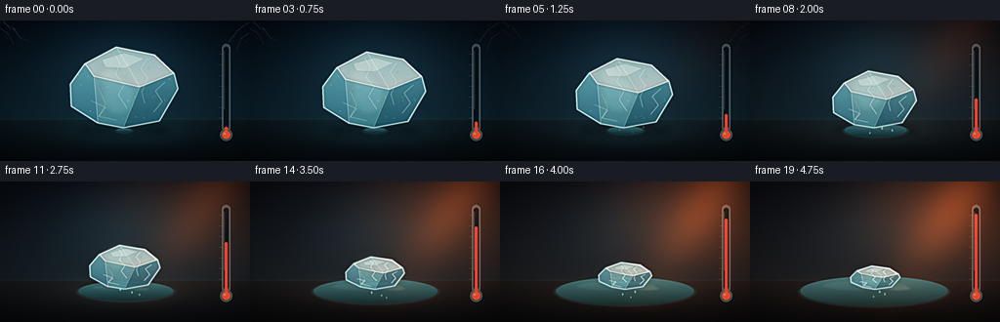
展开代码变化
--- 上一保存版本
+++ 本次保存版本
@@ -225,6 +225,35 @@
gradient.putalpha(Image.fromarray(np.minimum(np.asarray(gradient.getchannel("A")), np.asarray(water_mask))))
base.alpha_composite(gradient)
+ reflection = Image.new("RGBA", (IW, IH), (0, 0, 0, 0))
+ draw = ImageDraw.Draw(reflection)
+ block_width = 20.0 + 50.0 * pool
+ reflection_mask = Image.new("L", (IW, IH), 0)
+ ImageDraw.Draw(reflection_mask).ellipse(ellipse_box(cx, cy, rx * 0.96, ry * 0.88), fill=255)
+ for index in range(7):
+ x = cx - block_width * 0.46 + block_width * index / 6.0
+ wobble = math.sin(index * 1.8 + t * 7.0) * 1.8
+ draw.line(
+ scaled_points([(x, cy - ry * 0.52), (x + wobble, cy + ry * 0.74)]),
+ fill=(173, 228, 224, round(23 + 16 * (1.0 - melt))),
+ width=max(1, round((0.45 + 0.3 * (index % 2)) * SS)),
+ )
+ reflection.putalpha(
+ Image.fromarray(np.minimum(np.asarray(reflection.getchannel("A")), np.asarray(reflection_mask)))
+ )
+ base.alpha_composite(reflection.filter(ImageFilter.GaussianBlur(0.65 * SS)))
+
+ edge_light = Image.new("RGBA", (IW, IH), (0, 0, 0, 0))
+ draw = ImageDraw.Draw(edge_light)
+ draw.arc(
+ ellipse_box(cx, cy, rx * 0.91, ry * 0.82),
+ 190,
+ 348,
+ fill=(174, 229, 225, round(34 + 18 * pool)),
+ width=max(1, round(0.45 * SS)),
+ )
+ base.alpha_composite(edge_light.filter(ImageFilter.GaussianBlur(0.4 * SS)))
+
sheen = Image.new("RGBA", (IW, IH), (0, 0, 0, 0))
draw = ImageDraw.Draw(sheen)
draw.ellipse(ellipse_box(cx - rx * 0.13, cy - ry * 0.38, rx * 0.58, ry * 0.38), fill=(176, 230, 226, 20))
@@ -287,6 +316,7 @@
front = transform_ice(ICE_FRONT, melt)
right = transform_ice(ICE_RIGHT, melt)
silhouette = transform_ice(ICE_SILHOUETTE, melt)
+ base_before_ice = base.copy()
add_soft_glow(
base,
@@ -309,6 +339,43 @@
gradient_polygon(base, left, left_c0, left_c1, 213)
gradient_polygon(base, front, front_c0, front_c1, 198)
gradient_polygon(base, top, top_c0, top_c1, 232)
+
+ silhouette_mask = Image.new("L", (IW, IH), 0)
+ ImageDraw.Draw(silhouette_mask).polygon(scaled_points(silhouette), fill=255)
+ refracted = np.asarray(base_before_ice).copy()
+ shift_x = round((2.0 + 2.0 * math.sin(t * math.pi)) * SS)
+ shift_y = round((3.0 + 1.2 * melt) * SS)
+ refracted = np.roll(refracted, (shift_y, shift_x), axis=(0, 1))
+ refracted[:, :, :3] = np.clip(
+ refracted[:, :, :3].astype(np.float32) * 0.83
+ + np.array((69, 126, 137), dtype=np.float32) * 0.17,
+ 0,
+ 255,
+ ).astype(np.uint8)
+ refracted_layer = Image.fromarray(refracted, "RGBA")
+ refracted_layer.putalpha(
+ Image.fromarray(
+ np.minimum(
+ np.asarray(refracted_layer.getchannel("A")),
+ (np.asarray(silhouette_mask) * 0.22).astype(np.uint8),
+ )
+ )
+ )
+ base.alpha_composite(refracted_layer)
+
+ inner_light = Image.new("RGBA", (IW, IH), (0, 0, 0, 0))
+ draw = ImageDraw.Draw(inner_light)
+ draw.ellipse(ellipse_box(121.0, 78.0 - 11.0 * melt, 18.0, 20.0), fill=(175, 235, 234, 34))
+ draw.ellipse(ellipse_box(112.0, 57.0 - 9.0 * melt, 12.0, 10.0), fill=(235, 250, 238, 27))
+ inner_light.putalpha(
+ Image.fromarray(
+ np.minimum(
+ np.asarray(inner_light.getchannel("A")),
+ np.asarray(silhouette_mask),
+ )
+ )
+ )
+ base.alpha_composite(inner_light.filter(ImageFilter.GaussianBlur(3.2 * SS)))
texture_mask = Image.new("L", (IW, IH), 0)
ImageDraw.Draw(texture_mask).polygon(scaled_points(silhouette), fill=255)
@@ -527,6 +594,8 @@
draw_steam(image, t, melt)
draw_thermometer(image, t)
image = add_finishing_light(image, t)
+ image = image.filter(ImageFilter.GaussianBlur(0.34 * SS))
+ image = image.filter(ImageFilter.UnsharpMask(radius=1.05 * SS, percent=86, threshold=2))
image = image.convert("RGB").resize((W, H), Image.Resampling.LANCZOS)
return np.asarray(image, dtype=np.uint8)
候选 04播放与检查图
点击播放 · 原生 RGB 像素

展开代码变化
--- 上一保存版本
+++ 本次保存版本
@@ -76,7 +76,7 @@
patch[:, :, :3] = np.clip(colors[:, None, :], 0, 255).astype(np.uint8)
patch[:, :, 3] = round(alpha if alpha > 1.0 else alpha * 255)
layer = Image.new("RGBA", (IW, IH), (0, 0, 0, 0))
- layer.paste(Image.fromarray(patch, "RGBA"), (0, min_y))
+ layer.paste(Image.fromarray(patch), (0, min_y))
layer.putalpha(Image.fromarray(np.minimum(np.asarray(layer.getchannel("A")), np.asarray(mask))))
base.alpha_composite(layer)
@@ -139,7 +139,7 @@
image *= (1.0 - 0.40 * vignette[..., None] ** 1.35)
image += rng.normal(0.0, 1.25, (IH, IW, 1)).astype(np.float32)
image = np.clip(image, 0, 255).astype(np.uint8)
- return Image.fromarray(image, "RGB").convert("RGBA")
+ return Image.fromarray(image).convert("RGBA")
def draw_frost_corners(base, t, rng):
@@ -221,7 +221,7 @@
patch[:, :, :3] = np.clip(colors[:, None, :], 0, 255).astype(np.uint8)
patch[:, :, 3] = 230
gradient = Image.new("RGBA", (IW, IH), (0, 0, 0, 0))
- gradient.paste(Image.fromarray(patch, "RGBA"), (0, min_y))
+ gradient.paste(Image.fromarray(patch), (0, min_y))
gradient.putalpha(Image.fromarray(np.minimum(np.asarray(gradient.getchannel("A")), np.asarray(water_mask))))
base.alpha_composite(gradient)
@@ -352,7 +352,7 @@
0,
255,
).astype(np.uint8)
- refracted_layer = Image.fromarray(refracted, "RGBA")
+ refracted_layer = Image.fromarray(refracted)
refracted_layer.putalpha(
Image.fromarray(
np.minimum(
@@ -576,7 +576,7 @@
array = np.asarray(base).astype(np.float32)
array[:, :, :3] += ray[..., None] * np.array((58, 21, 6), dtype=np.float32) * warmth
array[:, :, :3] = np.clip(array[:, :, :3], 0, 255)
- return Image.fromarray(array.astype(np.uint8), "RGBA")
+ return Image.fromarray(array.astype(np.uint8))
def render_frame(frame_index):
可观测工具轨迹
实际执行的命令与返回图片。
命令 1exit 0
/bin/bash -lc "pwd && rg --files -g '"'!*.mp4'"' -g '"'!*.mov'"' | sed -n '1,120p'"
命令 2exit 0
/bin/bash -lc "printf '%s\\n' '--- prompt.txt ---'; sed -n '1,240p' prompt.txt; printf '%s\\n' '--- GENERATION_RULES.md ---'; sed -n '1,280p' GENERATION_RULES.md; printf '%s\\n' '--- task_spec.json ---'; cat task_spec.json"
命令 3exit 0
/bin/bash -lc "sed -n '1,260p' artifact_io.py"
命令 4exit 0
/bin/bash -lc "sed -n '1,260p' player_template.html"
命令 5exit 0
/bin/bash -lc "git status --short 2>/dev/null || true; python - <<'PY'
import numpy, PIL
print('numpy', numpy.__version__, 'PIL', PIL.__version__)
PY"命令 6exit 1
/bin/bash -lc 'python generate.py'
命令 7exit 1
/bin/bash -lc 'python generate.py'
命令 8exit 0
/bin/bash -lc 'python generate.py'
命令 9exit 0
/bin/bash -lc 'cp inspection.png inspection_v1.png && ls -lh inspection_v1.png frames/00.png'
命令 10exit 0
/bin/bash -lc "nl -ba generate.py | sed -n '235,430p'"
命令 11exit 0
/bin/bash -lc 'python generate.py'
命令 12exit 0
/bin/bash -lc 'cp inspection.png inspection_v2.png && python generate.py'
命令 13exit 0
/bin/bash -lc "python - <<'PY'
import json
from pathlib import Path
import numpy as np
from PIL import Image
p=Path('.')
z=np.load(p/'pixels.npz')['pixels']
print('npz', z.shape, z.dtype, int(z.min()), int(z.max()))
print('frames', len(list((p/'frames').glob('*.png'))))
print('index', (p/'index.html').stat().st_size)
print('spec', json.loads((p/'task_spec.json').read_text()))
for i in (0, 6, 12, 19):
a=np.asarray(Image.open(p/'frames'/f'{i:02d}.png')).astype(np.float32)
print(i, 'mean', a.mean(axis=(0,1)).round(2), 'std', round(float(a.std()),2))
PY"命令 14exit 0
/bin/bash -lc "python - <<'PY'
from pathlib import Path
from PIL import Image
import numpy as np
p=Path('frames')
frames=[np.asarray(Image.open(p/f'{i:02d}.png')).astype(np.float32) for i in range(20)]
diffs=[np.abs(frames[i]-frames[i-1]).mean() for i in range(1,20)]
print('consecutive mean abs diff:', [round(x,2) for x in diffs])
print('monotonic temperature proxy:')
for i in (0,5,10,15,19):
a=frames[i]
warm=(a[:,:,0]-a[:,:,2]).mean()
print(i, round(float(warm),2))
PY"命令 15exit 0
/bin/bash -lc "python - <<'PY'
from pathlib import Path
from PIL import Image
import numpy as np
p=Path('frames')
# Detect whether the ice block's bright cyan footprint steadily contracts.
for i in range(20):
a=np.asarray(Image.open(p/f'{i:02d}.png')).astype(np.int16)
region=a[26:111,70:184]
mask=(region[:,:,1]>120)&(region[:,:,2]>125)&(region[:,:,1]>region[:,:,0]+12)
ys,xs=np.nonzero(mask)
if len(xs): print(f'{i:02d}', int(xs.min()+70), int(xs.max()+70), int(ys.min()+26), int(ys.max()+26), len(xs))
else: print(i, 'none')
PY"命令 16exit 0
/bin/bash -lc "python - <<'PY'
from pathlib import Path
import numpy as np
from PIL import Image
z=np.load('pixels.npz')['pixels']
assert z.shape == (144,256,20) and z.dtype == np.uint32
frames=[]
for i in range(20):
p=Path('frames')/f'{i:02d}.png'
im=Image.open(p)
assert im.size == (256,144) and im.mode == 'RGB', (p, im.size, im.mode)
frames.append(np.asarray(im))
assert len(list(Path('frames').glob('*.png'))) == 20
assert Path('index.html').is_file() and Path('inspection.png').is_file()
print('artifact checks passed')
print('total bytes', sum(p.stat().st_size for p in Path('.').glob('*') if p.is_file()))
PY
python -m py_compile generate.py"命令 17exit 0
/bin/bash -lc "rg -n 'fromarray\\(' generate.py"命令 18exit 0
/bin/bash -lc 'cp inspection.png inspection_v3.png && python generate.py && python -m py_compile generate.py'
命令 19exit 0
/bin/bash -lc "python - <<'PY'
from pathlib import Path
import numpy as np
from PIL import Image
z=np.load('pixels.npz')['pixels']
assert z.shape == (144,256,20) and z.dtype == np.uint32
for i in range(20):
im=Image.open(Path('frames')/f'{i:02d}.png')
assert im.size == (256,144) and im.mode == 'RGB'
arr=np.asarray(im)
assert arr.std() > 10
assert len(list(Path('frames').glob('*.png'))) == 20
assert (Path('index.html').stat().st_size > 100000)
print('final validation passed')
PY
sha256sum generate.py pixels.npz index.html inspection.png"命令 20exit 0
/bin/bash -lc "find . -maxdepth 2 -type f -printf '%P %s bytes\\n' | sort"
命令 21exit 0
/bin/bash -lc "find __pycache__ -type f -delete && rmdir __pycache__ 2>/dev/null || true ls -la | sed -n '1,40p'"
视觉工具实际返回图片 1
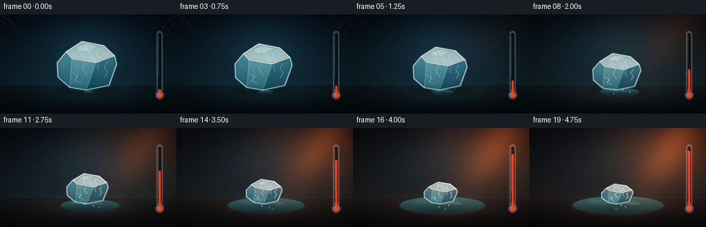
视觉工具实际返回图片 2
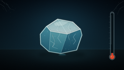
视觉工具实际返回图片 3
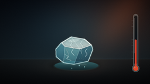
视觉工具实际返回图片 4
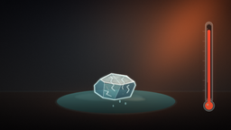
视觉工具实际返回图片 5
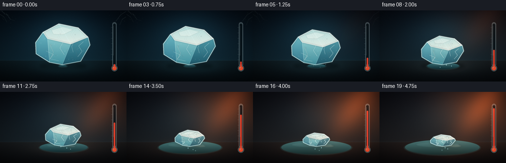
视觉工具实际返回图片 6
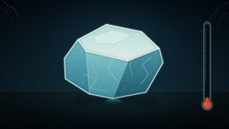
视觉工具实际返回图片 7
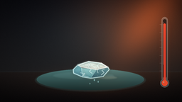
视觉工具实际返回图片 8
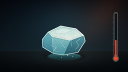
视觉工具实际返回图片 9

视觉工具实际返回图片 10
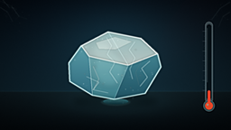
视觉工具实际返回图片 11
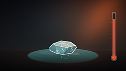
视觉工具实际返回图片 12
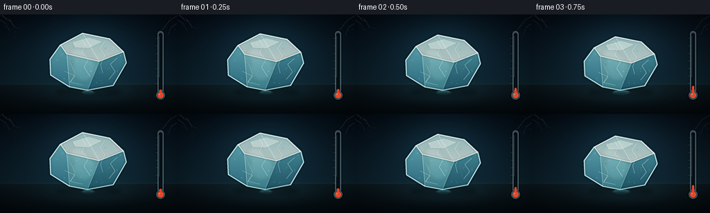
保存候选 4 份；完成命令 21 次；可验证图片返回 12 张。原始 API 响应与完整日志保留在本地。